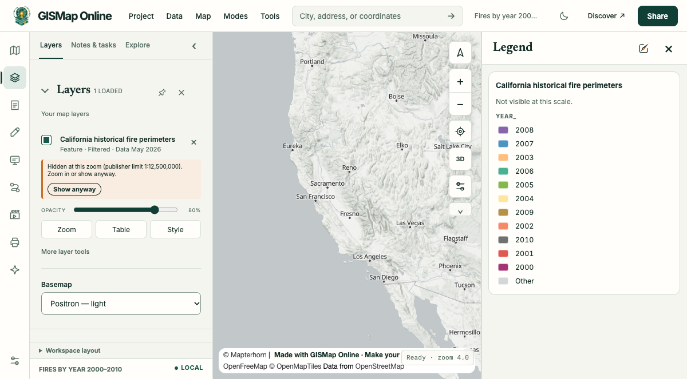

AI prompt example
A refinement of an existing link
Take my California fire map and colour it by year, keeping the 2000 to 2010 filter.

Prompt
Take my California fire map and colour it by year, keeping the 2000 to 2010 filter.
Link
https://gismap.online/#map=json:%7B%22version%22%3A1%2C%22title%22%3A%22Fires%20by%20year%202000%E2%80%932010%22%2C%22basemap%22%3A%22gray-vector%22%2C%22camera%22%3A%7B%22center%22%3A%5B-120%2C37.5%5D%2C%22zoom%22%3A5%7D%2C%22legend%22%3Atrue%2C%22layers%22%3A%5B%7B%22url%22%3A%22https%3A%2F%2Fservices1.arcgis.com%2FjUJYIo9tSA7EHvfZ%2FArcGIS%2Frest%2Fservices%2FCalifornia_Historic_Fire_Perimeters%2FFeatureServer%2F0%22%2C%22type%22%3A%22feature%22%2C%22title%22%3A%22California%20historical%20fire%20perimeters%22%2C%22where%22%3A%22YEAR_%20%3E%3D%202000%20AND%20YEAR_%20%3C%3D%202010%22%2C%22opacity%22%3A0.8%2C%22renderer%22%3A%7B%22type%22%3A%22categories%22%2C%22field%22%3A%22YEAR_%22%2C%22maxCategories%22%3A11%2C%22colors%22%3A%7B%222000%22%3A%22%238e0152%22%2C%222001%22%3A%22%23d73027%22%2C%222002%22%3A%22%23f46d43%22%2C%222003%22%3A%22%23fdae61%22%2C%222004%22%3A%22%23fee08b%22%2C%222005%22%3A%22%2366a61e%22%2C%222006%22%3A%22%231b9e77%22%2C%222007%22%3A%22%231f78b4%22%2C%222008%22%3A%22%236a3d9a%22%2C%222009%22%3A%22%23a6761d%22%2C%222010%22%3A%22%234d4d4d%22%7D%7D%7D%5D%7DWhat the agent says
The source, filter, basemap and camera are unchanged; only the renderer is new.
Status reached
loaded, checked 2026-11-01 in headless Chrome. Live services change, and intended features, filter and reopening were not separately verified.